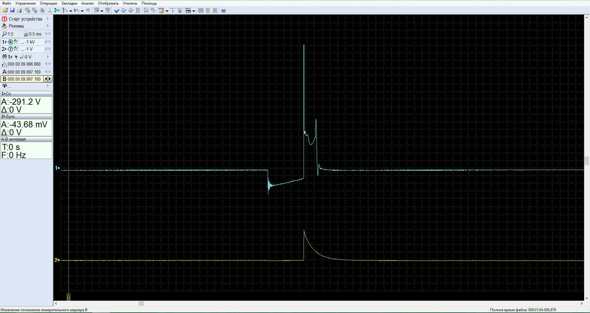
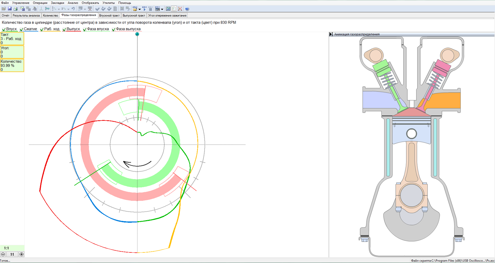

Цены
Вы можете скачать цены на услуги автосервиса: PDF
Или Читать дальше:
Zemāk norādītas aptuvenas cenas par darbu, informatīvam nolūkam, lai gūtu priekšstatu par cenu veidošanos. Tā kā dažādu automašīnu konstrukcijas ir atšķirīgas un bojājumi, korozija var būt dažādi, precīzas cenas katrai automašīnai nav iespējams norādīt.
Описание услуг

Диагностика и ремонт бензиновых двигателей
Диагностика выхлопных газов с помощью газоанализатора Bosch BEA850.
Проведя анализ состава четырех газов (CO, CO2, CH, O2 и lamda), можно оценить работу системы управления двигателем, ресурс катализатора и соответствие выхлопных газов требованиям технического осмотра.
Компьютерная диагностика с помощью сканера. С помощью сканера можно считать накопленные ошибки в электронном блоке управления двигателем, сбросить ошибки, считать показания датчиков при работе двигателя, адаптировать необходимые исполнительные механизмы, кодирование электронных блоков управления.
Диагностика двигателя с помощью автомобильного осциллографа (мотортестера).
Индивидуальное тестирование датчиков и исполнительных механизмов двигателя.
Диагностика зажигания по осциллограмме искры.

Скрипт CSS для проверки работы двигателя. Позволяет оценить и сравнить производительность каждого цилиндра во всем диапазоне нагрузки и оборотов двигателя. Этот тест используется для выявления причин неравномерной работы двигателя. Оцениваются подготовка топливной смеси и характеристики зажигания индивидуально в каждом цилиндре.

Скрипт Px для проверки механического состояния и износа двигателя. Позволяет оценить работу газораспределительных механизмов двигателя, угол опережения зажигания во всем диапазоне нагрузок и скоростей, сопротивление, создаваемое выхлопной системой. Этот тест используется для определения возможных механических причин потери мощности двигателя

Проверка и ультразвуковая очистка топливных форсунок на стенде.
Испытательный стенд CarbonZapp GS2. Multi port (MPI), прямой впрыск (GDI, FSI, TSI), моно-мотроник, KE jetronic.
Обслуживание двигателя, подготовка к техническому осмотру.
Замена ремня ГРМ или цепи газораспределительного механизма.
Диагностика и ремонт дизельных двигателей
Измерение коэффициента дымности выхлопных газов с помощью газоанализатора Bosch BEA850.
Компьютерная диагностика с помощью сканера. С помощью сканера можно считать накопленные ошибки в электронном блоке управления двигателем, сбросить ошибки, считать показания датчиков при работе двигателя, адаптировать необходимые исполнительные механизмы, кодируя электронный блок управления.
Диагностика двигателя с помощью автомобильного осциллографа (мотортестера).
Индивидуальное тестирование датчиков и исполнительных механизмов двигателя.
Скрипт CSS для проверки работы двигателя. Позволяет оценить и сравнить производительность каждого цилиндра во всем диапазоне нагрузки и оборотов двигателя. Этот тест используется для выявления причин неисправности двигателя. Подготовка топливной смеси и динамическое сжатие в каждом цилиндре оценивается индивидуально.

Обслуживание двигателя, подготовка к техническому осмотру.
Замена ремня ГРМ или цепи газораспределительного механизма.

Диагностика и ремонт электросистем
Оценка силовой электросистемы (аккумулятор, стартер, генератор).
Диагностика проводится с помощью автомобильного осциллографа (мотортестера), скрипт ElPower.
Быстрая и качественная оценка технического состояния аккумуляторной батареи, стартера и генератора, без снятия компонентов.

Обследование и ремонт различных электрических систем, подготовка к техническому осмотру.

Диагностика и ремонт ходовой части
Ремонт механизма подвески. Замена рычагов, сайлентблоков, шарниров, пружин, амортизаторов.
Ремонт рулевого механизма. Диагностика и ремонт системы SAS, адаптация датчика рулевого колеса.
Регулировка геометрии колес на стенде.

Диагностика и ремонт тормозной системы
Ремонт тормозной системы.
Диагностика и ремонт систем ABS, ESP.
Диагностика и ремонт систем электронных стояночных тормозов EPB.